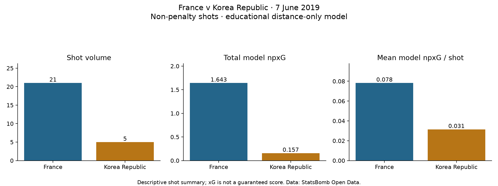

Football analyst training · Project lesson 29
More shots, better chances—or both?
A coach needs a clear match explanation. We now turn individual shot probabilities into three useful numbers.
1. Add the shot probabilities
Imagine three shots with xG values 0.10, 0.20 and 0.30. Their total is 0.60 xG. Divide by three shots to get 0.20 xG per shot. Total xG describes the combined expected goal count; xG per shot describes average estimated chance quality.
2. Read our actual example
For France against Korea Republic, our frozen distance-only model gives France 21 shots, 1.643 non-penalty xG and 0.078 per shot. Korea Republic has five shots, 0.157 non-penalty xG and 0.031 per shot.

3. Keep the claim precise
France scored four shot goals, although the model total is 1.643. xG is not a promised score. One match cannot prove exceptional finishing skill or model accuracy. These are our educational model's numbers, not the provider's xG. Distance alone misses angle, pressure and other context.
4. Try a real analyst sentence
In Spyder, open 29_match_xg_summary.py and run it. Find total = sum(...) and total / len(rows): addition gives total xG; division gives average xG per shot. Write a two-sentence coach brief using both comparisons and one limitation.
Compare your reasoning
“France generated more attempts (21 versus five) and higher average estimated chance quality (0.078 versus 0.031 npxG per shot). This is a distance-only model summary of one match, so it does not establish the tactical reason for that advantage.” Ask your teacher for feedback on your own wording.
No model was changed. This first chronological fixture was already part of our evaluation; this lesson is interpretation, not another independent test.